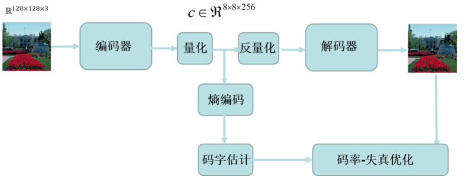
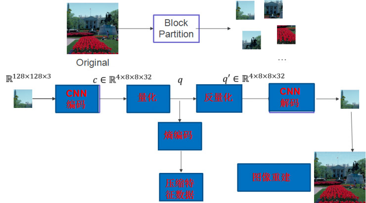

TNG(Tiny Network Graphics)，一种图像压缩技术，功能是将低分辨图片转化为高清版本，旨在保持图片的质量下，尽可能降低图片的大小，使用户在带宽受限的网络情况下，仍可看到高清的图像
TNG 采用的算法是卷积神经网络（CNN）。卷积神经网络是一种前馈神经网络，它的人工神经元可以响应一部分覆盖范围内的周围，适合大型图像处理。
一个卷积神经网络由卷积、池化、非线性函数、归一化层等模块组成。最终的输出根据应用而定，如在人脸识别领域，我们可以用它来提取一串特征来表示一幅人脸图片。然后通过比较特征的异同进行人脸识别。
TNG采用了量化与反量化的技术。通过量化技术将浮点数转换为整数或二进制数，这时通常采用的方法是：去除浮点数后面的小数，将浮点数变成整数。在解码端，又采用反量化技术将变换后的特征数据恢复成浮点数，如给整数加上一个随机小数。这样可以一定程度上降低量化对神经网络精度的影响，从而提高恢复图像的质量。
如何利用卷积神经网络做压缩？
以下两张图片来自不同的文章，总体意思差不多，只有一些细节上的差异：
如图1（用深度学习进行图片压缩示意图）所示，【完整的深度学习图片压缩框架】包括CNN编码器、量化、反量化、CNN解码器、熵编码、码字估计和码率-失真优化等几个模块。编码器的作用是将图片转换为压缩特征，解码器就是从压缩特征恢复出原始图片。其中编码网络和解码器，可以用卷积、池化、非线性等模块进行设计和搭建。 
如图 2（用深度学习进行图片压缩示意图）所示，完整的框架包括 CNN 编码网络、量化、反量化、CNN 解码、熵编码等几个模块。编码网络的作用是将图片转换为压缩特征，解码网络就是从压缩特征恢复出原始图片。其中编码网络和解码网络，可以用卷积、池化、非线性等模块进行设计和搭建。 
如何评判压缩算法
在深入技术细节前，我们先来了解一下如何评判压缩算法。评判一个压缩算法好坏的重要指标有两个：一个是每个像素占据的比特位数（bit per pixel，BPP），一个是 PSNR。我们知道，数据在计算机中以比特形式存储，所需比特数越多则占据的存储空间越大。BPP 用于表示图像中每个像素所占据的比特数，如一张 RGB 三通道图，表示每个像素需要消耗 24 个比特。PSNR 用来评估解码后图像的恢复质量，简单理解就是 PSNR 越高，恢复质量越好。
我们举个例子，假设长宽为 768*512 的图片大小为 1M，利用深度学习技术对它编码，通过编码网络后产生包括 96*64*192 个数据单元的压缩特征数据，如果表示每个数据单元平均需要消耗 1 个比特，则编码整张图需要 96*64*192 个比特。经过压缩后，编码每个像素需要的比特数为（96*64*192）/(768*512）=3，所以 BPP 值为 3bit/pixel，压缩比为 24:3=8:1。这意味着一张 1M 的图，通过压缩后只需要消耗 0.125M 的空间，换句话说，之前只能放 1 张照片的空间，现在可以放 8 张。
如何用深度学习做压缩
谈到如何用深度学习做压缩，还是用刚才那个例子。将一张大小 768*512 的三通道图片送入编码网络，进行前向处理后，会得到占据 96*64*192 个数据单元的压缩特征。有计算机基础的读者可能会想到，这个数据单元中可放一个浮点数，整形数，或者是二进制数。那问题来了，到底应该放入什么类型的数据？从图像恢复角度和神经网络原理来讲，如果压缩特征数据都是浮点数，恢复图像质量是最高的。但一个浮点数占据 32 个比特位，那之前讲的比特数计算公式变为（96*64*192*32）/（768*512）=96，压缩后反而每个像素占据比特从 24 变到 96，非但没有压缩，反而增加了，这是一个糟糕的结果，很显然浮点数不是好的选择。
所以为了设计靠谱的算法，我们使用一种称为量化的技术，它的目的是将浮点数转换为整数或二进制数，最简单的操作是去掉浮点数后面的小数，浮点数变成整数后只占据 8 比特，则表示每个像素要占据 24 个比特位。与之对应，在解码端，可以使用反量化技术将变换后的特征数据恢复成浮点数，如给整数加上一个随机小数，这样可以一定程度上降低量化对神经网络精度的影响，从而提高恢复图像的质量。
即使压缩特征中每个数据占据 1 个比特位，可是 8:1 的压缩比在我们看来并不是一个很理想的结果。那如何进一步优化算法？再看下 BPP 的计算公式。假设每个压缩特征数据单元占据 1 个比特，则公式可写成：（96*64*192*1）/(768*512）=3，计算结果是 3 bit/pixel，从压缩的目的来看，BPP 越小越好。在这个公式中，分母由图像决定，可以调整的部分在分子，分子中 96、64、192 这三个数字与网络结构相关。很显然，当我们设计出更优的网络结构，这三个数字就会变小。
那 1 与哪些模块相关？1 表示每个压缩特征数据单元平均占据 1 个比特位，量化会影响这个数字，但它不是唯一的影响因素，它还与码率控制和熵编码有关。码率控制的目的是在保证图像恢复质量的前提下，让压缩特征数据单元中的数据分布尽可能集中、出现数值范围尽可能小，这样我们就可以通过熵编码技术来进一步降低 1 这个数值，图像压缩率会进一步提升。
用深度学习做视频压缩，可以看作是在深度学习图片压缩基础上的扩展，可结合视频序列帧间的光流等时空信息，在单张压缩的基础上，进一步降低码率。
参考资料：